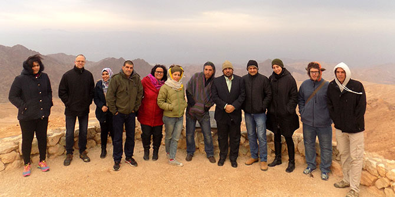

The third annual “Professional Identity in Action” winter seminar for graduates of the Mandel Center for Leadership in the Negev was held on Kibbutz Eilot on January 25, 2017, under the direction of Professor Avi Kaplan.
The seminar was designed to enable graduates to learn and practice Professor Kaplan’s “professional identity in action” model. This model places the “action” that is being studied at the center, examines the context in which it takes place, and explores its goals, the actor’s self-perception and assumptions about the world, and the available alternatives for action. Participation in the seminar enables graduates to study the model in depth so as to use it in their personal and professional lives as a means of bringing about change.
In the previous two years, the seminar focused on individual and group experiences, and explored the leadership activity of the Center’s fellows and graduates. This year, however, the seminar focused on the work of one particular organization: the pre-army preparatory program (“mechina”) at Kibbutz Be’er Ora. Now in its second year, the program is headed by Shimon Biton, a graduate of the Mandel Program for Local Leadership in Eilat, who founded the program and is growing and developing it further.
The staff of the pre-army preparatory program invited the graduates to study and apply Professor Kaplan’s model to the program’s work and to examine its training and learning processes, its uniqueness in Israel’s southern region, and questions regarding its future development.
The seminar was attended by 17 graduates of various programs of the Mandel Center for Leadership in the Negev, and included meetings and interviews with the Be’er Ora senior staff, teachers, and students, as well as with the head of the local council.
The relative physical isolation of the seminar and its intensive nature helped the graduates connect with each other and facilitated an in-depth and enjoyable learning process that will reinforce their work on their initiatives throughout the Negev.

{kind=link}